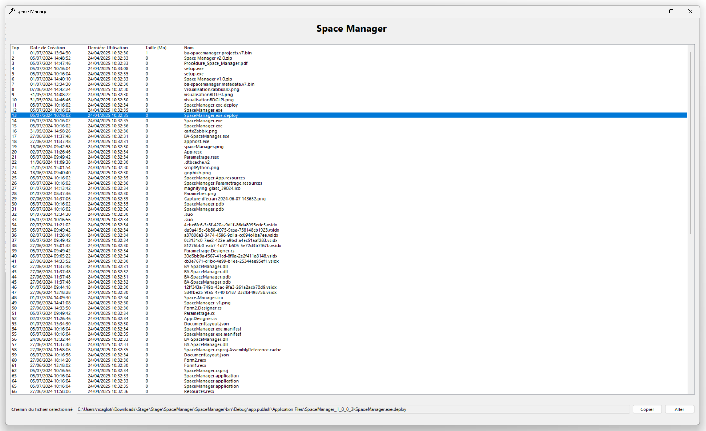

Mes Projets professionnels
Stage de BTS SIO première année : Association Le Bois l'Abbesse
Durée : 6 semaines
Voir le rapport de stage
Projet 1 : Développement d'une application de gestion de stockage de fichiers
Technos : MySQL, Grafana
Contexte et objectif : Utilisation de la base de donnée de l'association pour mettre des données sur l'application Grafana, un outil permettant de visualiser des données grâce à des dashboards L'objectif était de visualiser des statistiques des données, ainsi qu'avoir des logs
Tâches effectuées :
- Conception de la base de données (MySQL) fictive pour gérer les informations sans toucher à la vraie base de donnée.
- Développement de l’interface graphique avec Grafana et les données de la base de données fictive.
- Liaison de l'interface avec la vraie base de donnée
Page des statistiques
Page des logs
Projet 2 : Développement d'une application de gestion de stockage de fichiers
Technos : C#, MySQLContexte et objectif : Création d'une application permettant de gérer le stockage des fichiers sur différents serveurs d'une entreprise, avec une fonctionnalité de localisation de fichiers et d'informations de fichiers. L'objectif était d'optimiser la place des serveurs en localisant les fichiers les plus volumineux ou les moins utilisés
Tâches effectuées :
- Création de l'interface en C# avec Forms .NET
- Récupération des fichiers sur un dossier spécifié
- Lister les fichiers dans un ordre prédéfini via une page de paramètres
Accueil de l'application
Exemple de recherche de fichiers
Stage de BTS SIO deuxième année : Entreprise Alexis Colinon
Entreprise : Alexis Colinon
Durée : 6 semaines
Technos : HTML, CSS, JS, Bootstrap, MySQL, Java, JavaFX
Projet 1 : Refonte d'un site internet
Contexte et objectif : Étant impossible de récupérer les codes sources de l'ancien site, j'ai du refaire le site internet depuis 0. L'objectif était de refaire le site de l'entreprise car le prix de l'ancien site était trop élevé
Tâches effectuées :
- Refonte du site internet en HTML.
- Amélioration de ce site avec Bootstrap.
Page d'accueil

Page "qui sommes nous ?"
Page de contacts
Projet 2 : Conception d'une application de gestion du stockage
Contexte et objectif : Le projet consistait à développer une application locale installée sur un ordinateur dédié au stock. L'objectif était de permettre aux utilisateurs de saisir les matériaux qu'ils retirent ou ajoutent, ainsi que d'indiquer le chantier concerné.
Tâches effectuées :
- Conception de la base de données (MySQL) pour gérer les informations des produits et des stocks.
- Création de l’interface graphique avec JavaFX.
- Développement de l'application avec Java.
Page pour gérer le stock des matériaux
Page pour visualiser tous les chantiers
Page pour ajouter des matériaux à un chantier